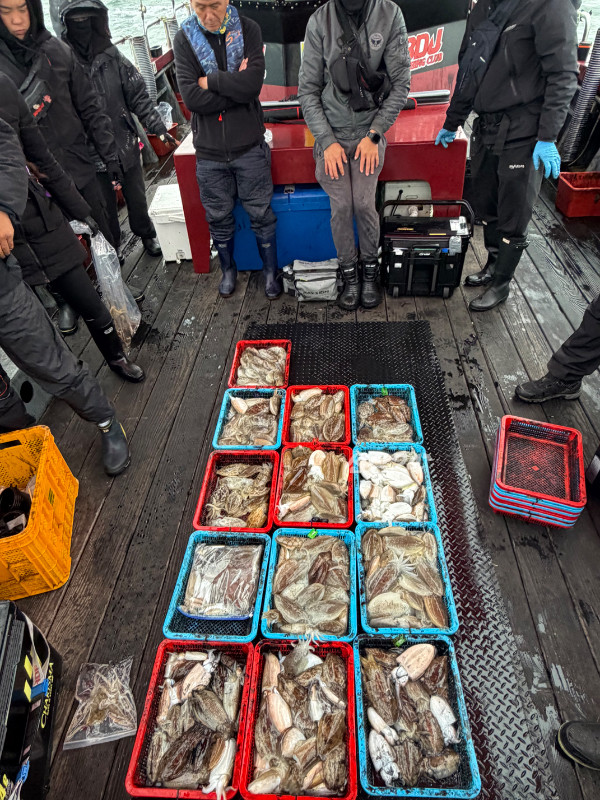
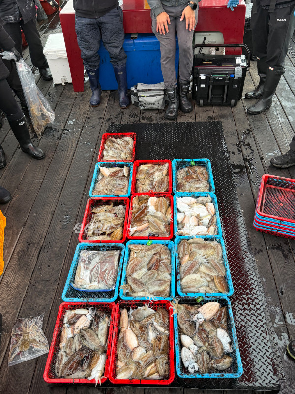

2026-10-29 · 안흥 스페이스호
조황정보 HOME / 조황정보 / 조황상세
10월29일 안흥항 스페이스호 VIP좌석 출조 성공 하였습니다 안녕하세요 안흥항 스페이스호 입니다.금일은 황제낚시 출조를 해서 자리 간격이 3미터 편안한 낚시를 할수 있는 분위기에서 13분 모시고 출항을 하였습니다.중간중간 쉬면서 하신분들을 제외하고는 괜찮은 조황으로 마무리 하였숩니다.높은파도와 바람에 고생 많으셨습니다. 찾아주셔서 감사합니다.*** 안흥 스페이스호 예약 안내 ***예약문의 : 010-3452-2718오시는길 : 충남 태안군 근흥면 안흥1길 32홈페이지 : https://spaceho.sunsang24.com/ 안흥 스페이스호 (서해안/안흥항) 1.7km 갑오징어 2026. 10. 29 | 조회 444 안흥 스페이스호 (서해안/안흥항) 2026. 10. 29 | 조회 444

